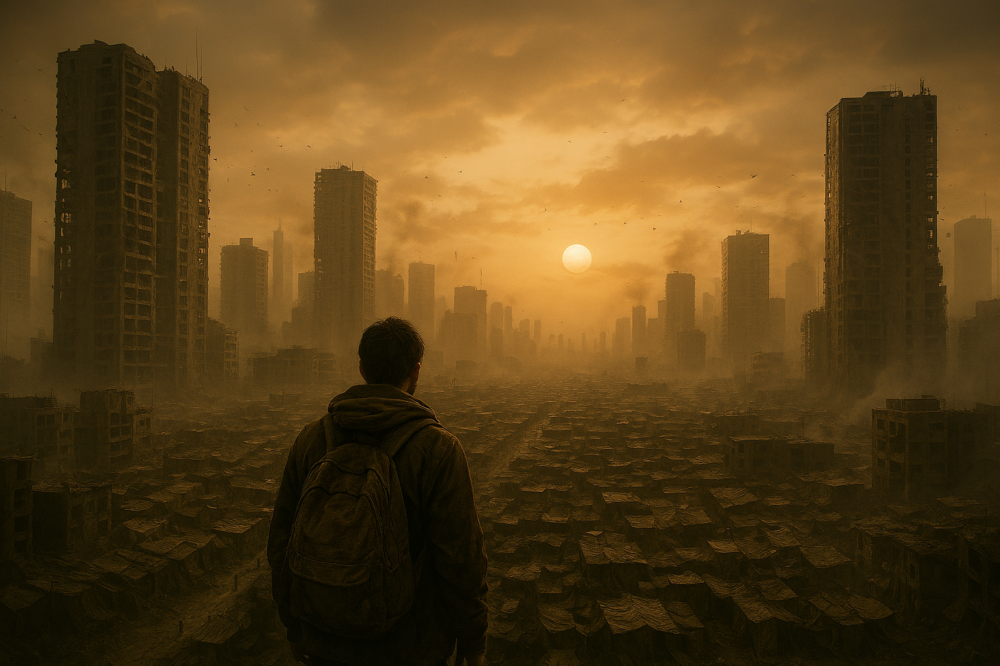
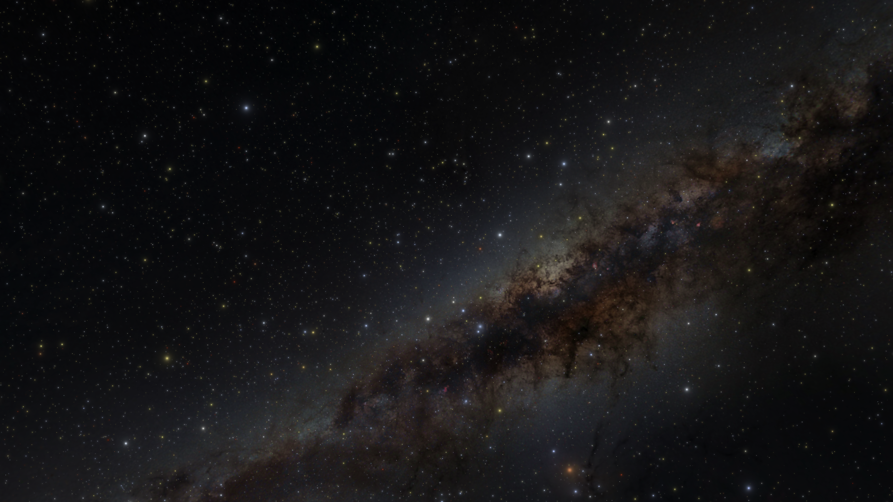

In the Realm of Fenreach - An audio game
A single player fantasy setting role-playing audio (only) game, in the style of the Fighting Fantasy game books. The game was an exploration in storytelling and game design made by a master student at the Media Technology and Engineering study program at Linköping University, Sweden.
Find out more about it here.

Story of Dylia
Story of Dylia is an indie-game game that explores non-verbal storytelling, developed as a master thesis in the MSc in Design at Linköping University, Sweden.
Find out more about it here.

Picture the future - music for continuity and cohesion
Picture the future is a paper by Sophie Gudmann Knutsson discussing how the future is depicted in 10 different science fiction movies, to understand how the future is communicated in popular culture and what we can learn from these approaches. But, it is not a paper. It is a short movie that uses video snippets and sounds clips from these 10 movies with voice over to tell this story. I wrote some music for the movie and I took the standpoint from traditional dramatic underscore and aimed to create music that would help in creating cohesion and bridge the different movie snippets, but also that could support different sections of the message in her storytelling. As I grew up in the 80’s I made electronic sounding music, maybe an homage to the original Blade runner film from 1982 with music by Vangelis. And I tried to make the music reflective and immersive, while still existing in the background.

Music for OpenSpace
OpenSpace is an incredible cool visualization tool for more or less all the known data about the universe. The software has been developed by a few different partners of one Linköping University, Sweden. I have made music for the dome theater format film, as well as music for live show presentations using OpenSpace.
Find out more about it here.